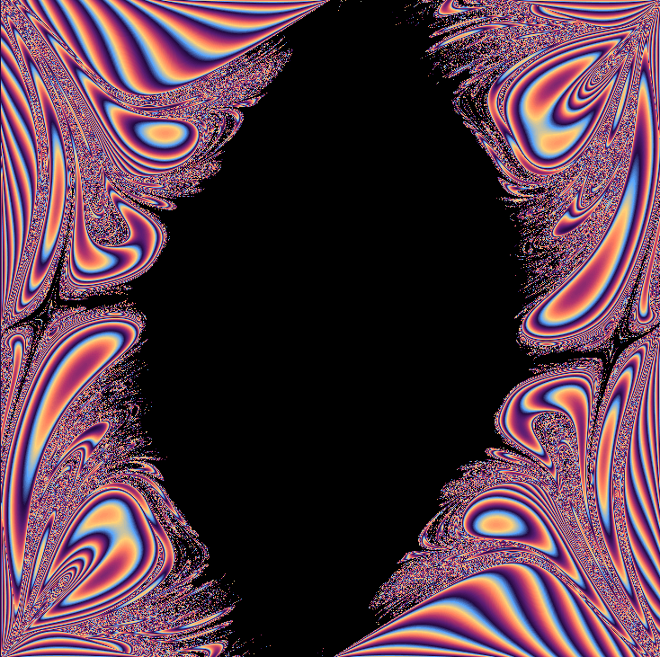

Physical chaos
Double Pendulum
A mechanical system whose initial angles become a fractal map.
A double pendulum is only two arms and two masses, but its motion can become wildly sensitive. wxChaos turns each pixel into a pair of starting angles and colors how long that simulated pendulum stays within the chosen bounds.

What to try first
Read the horizontal and vertical axes as initial angles \(\theta_1\) and \(\theta_2\). Neighboring pixels are nearly identical starting pendulums.
Choose a point near a boundary and zoom gently. Neighboring starting angles can separate into very different outcomes.
Toggle Runge-Kutta in the options and compare it with Euler integration. The picture changes because the numerical method changes how the physical motion is approximated.
What the controls mean
The bailout threshold determines when the simulated pendulum has moved too far from its initial state. wxChaos renders a pixel in black if the threshold is never exceeded and assigns it a color if it is. That color represents how long the simulation took to cross the threshold. The masses, lengths, gravity, and time step define the physical model, while the relative-angle option measures motion from the starting pose instead of using absolute angle limits.
Mathematical notes
Where the equations come from
The derivation starts by writing the two masses in polar coordinates, using \(\theta_1\) and \(\theta_2\) as the generalized coordinates. From those positions it computes the squared speeds, builds the kinetic energy \(T\) and gravitational potential energy \(V\), then forms the Lagrangian \(L=T-V\).
Applying the Euler-Lagrange equation \(\frac{d}{dt}\frac{\partial L}{\partial\dot{\theta_i}}-\frac{\partial L}{\partial\theta_i}=0\) gives two coupled second-order equations. Solving that pair simultaneously produces the accelerations \(\ddot{\theta}_1\) and \(\ddot{\theta}_2\) shown above. Because the masses are kept as \(m_1\) and \(m_2\), the formula matches the unequal-mass controls exposed by wxChaos.
Euler integration
Euler's method estimates the next state using the current acceleration. In simplified form, \(v_{n+1}=v_n+\Delta t\,a(\theta_n,v_n)\), then \(\theta_{n+1}=\theta_n+\Delta t\,v_{n+1}\). It is fast and easy to understand, but with chaotic systems its errors can grow quickly.
Runge-Kutta integration
Runge-Kutta methods improve on Euler by sampling several slopes inside the same time step and blending them. The common fourth-order pattern uses weights \(1/6,1/3,1/3,1/6\). wxChaos uses a four-slope Runge-Kutta style option for the pendulum accelerations, which usually gives a more stable approximation than one Euler slope per step.
Why this becomes a fractal image
The double pendulum is governed by coupled nonlinear differential equations. Nearby initial angles can remain close for a while and then diverge. When each pixel represents a starting pair \((\theta_1,\theta_2)\), the boundary between long-lived and quickly escaping starts can become extremely intricate.